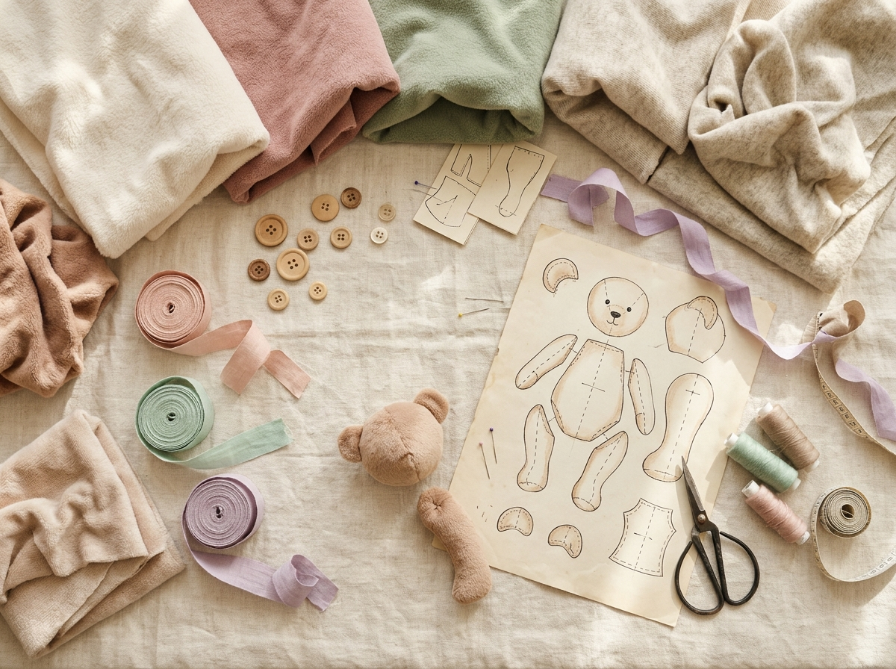

1. 安全與舒適優先
所有布料與填充棉均以親膚、透氣、無刺鼻氣味為標準，縫線加固處理，耐抱又安心。
從一張紙樣、一捲棉線開始，把溫柔的觸感帶進你的日常生活。

最初開始縫製泰迪熊，只是因為想為身邊重要的朋友做一份獨一無二的生日禮物。當看到對方抱著小熊露出的笑容時，我便決定把這份手作的溫度分享給更多人。
在「毛絨小熊手作屋」，每一隻小熊、垂耳兔與小羊都不追求大量生產的速度。我會親自挑選柔軟不易掉毛的布料、反覆調整頭身比例與表情神態，希望收到公仔的每個人，都能感受到被好好陪伴的安心感。
無論是慶祝生日、紀念日，還是單純想送給辛苦了一整週的自己，都歡迎在這裡找到屬於你的毛絨小夥伴。
用心做好每一個看不見的細節。
所有布料與填充棉均以親膚、透氣、無刺鼻氣味為標準，縫線加固處理，耐抱又安心。
偏愛蜜糖棕、燕麥奶、粉霧玫瑰與鼠尾草綠等低飽和色系，放進任何家居空間都很協調。
每隻公仔皆附簡易保養小卡，教你如何日常除塵與局部清潔，讓小熊長久保持蓬鬆。